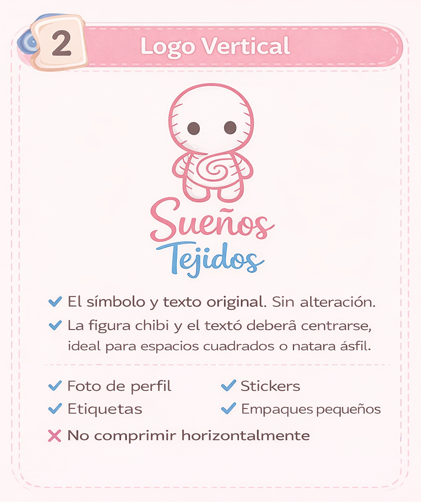
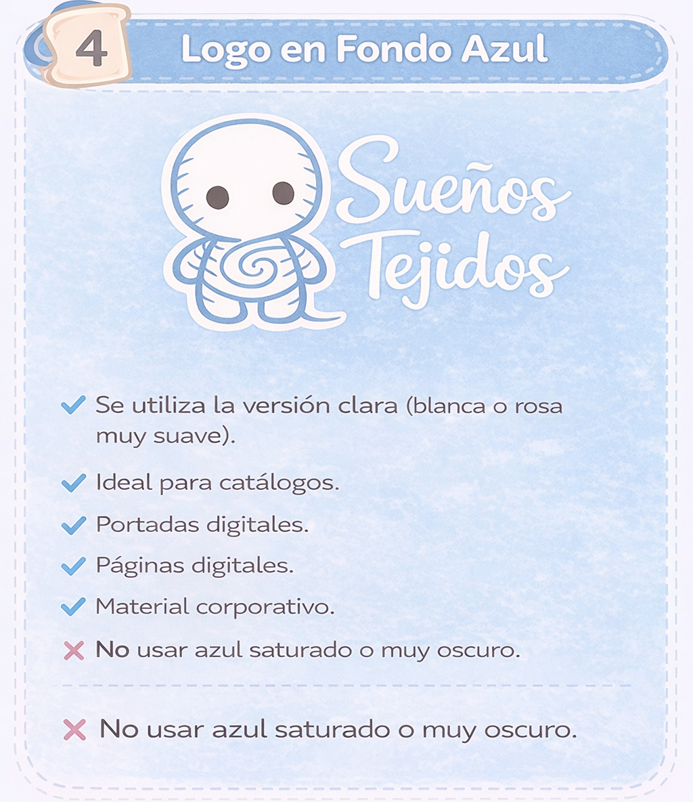
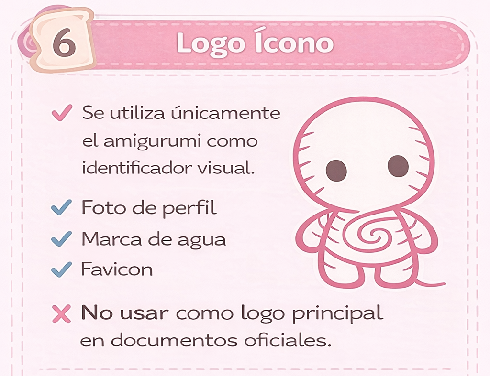

Usos correctos del logo
Sueños Tejidos

Versión Horizontal
Se utiliza cuando el espacio horizontal es amplio. Mantén siempre el espaciado y proporciones originales.

Versión Vertical
Ideal para espacios estrechos en altura. Asegúrate de respetar márgenes y altura proporcional.

Fondo Rosa
Usa esta versión sobre fondos rosa claros. Los colores del logo no deben modificarse.

Fondo Azul
Se emplea sobre fondos azules claros. Mantén contraste suficiente para buena legibilidad.

Monocromático
Versión monocromática para impresiones o situaciones donde no se pueden usar colores originales.

Icono
Solo el símbolo (amigurumi) para espacios muy pequeños o aplicaciones digitales donde el logo completo no cabe.